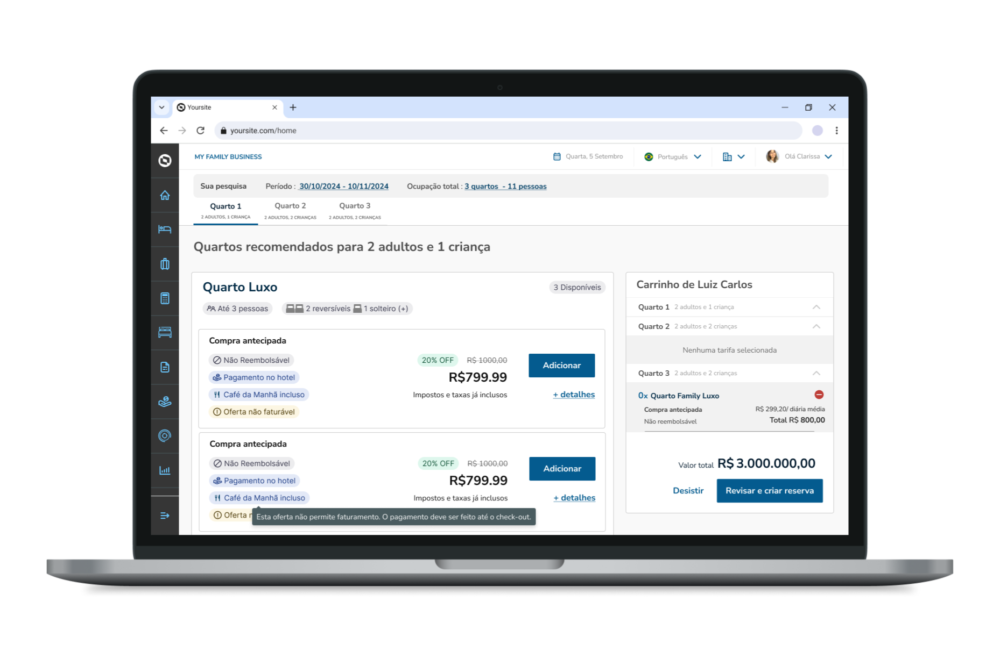

Designing Impactful Experiences for
TOTVS PMS SaaS
Integrating user research, business strategy, and design to transform the hotel industry.

Role and Responsibilities
As the UX Designer responsible for TOTVS PMS SaaS, I integrate deep user research, business strategy, and innovative design to create solutions that impact thousands of users in the hotel industry.
Key Activities & Achievements
- Creation of new features, using user research techniques such as interviews and testing.
- Optimization of existing flows, based on metric analysis and user behavior, reducing frustration signals by 40% and increasing usage by over 70%.
- Redesign of the Reservation Creation flow, a core system process, collaborating closely with the development team to ensure the best experience within technical limitations.
- Creation of new components and contributions to the company’s design system.
Impact
The redesigns and optimizations significantly improved usability, adoption, and user satisfaction, making TOTVS PMS SaaS a more efficient and user-friendly system for hotel staff and managers.
Results
+70%
Increase in feature usage
-40%
Reduction in frustration signals
100%
Improved alignment with design system
Key Takeaways
- User research is the foundation – qualitative and quantitative insights drove key decisions.
- Collaboration matters – close alignment with developers enabled realistic, impactful solutions.
- Design systems accelerate consistency and scalability.